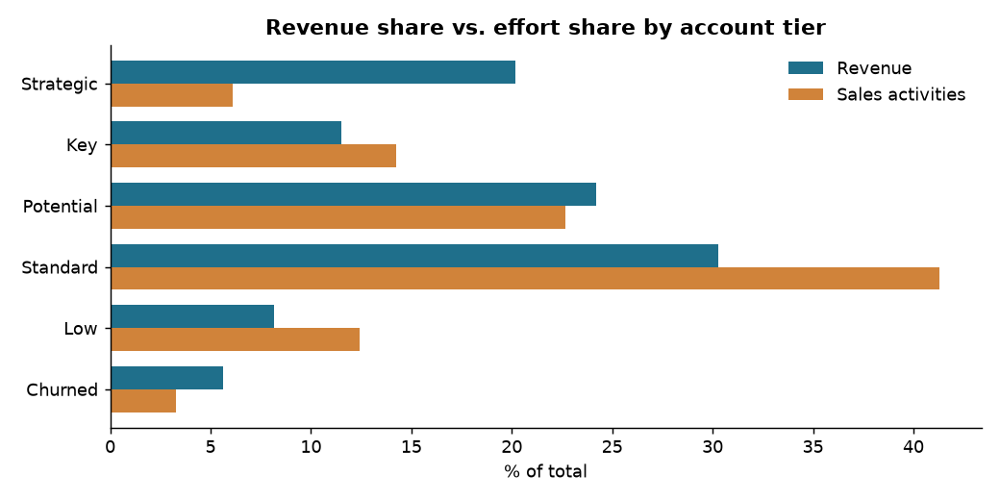
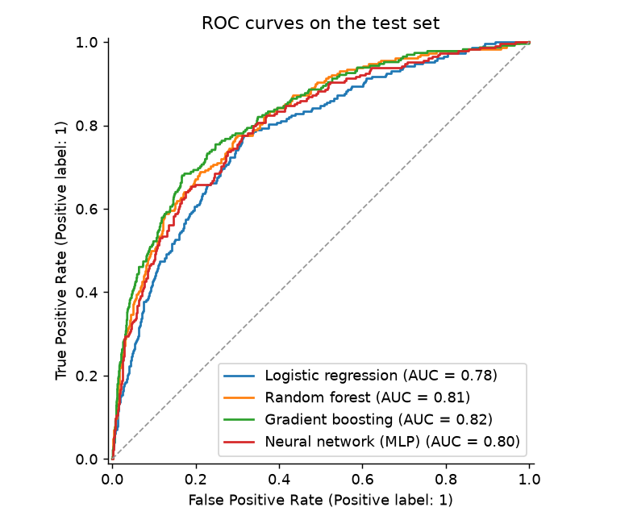

B2B Sales Intelligence
Replica of the dashboard I run on top of the ERP: revenue by broker, region and product, repurchase tracking per customer, and a lead-scoring model whose weights you can move to re-rank 180 dormant accounts.
Portfolio
AI & Data Automation · Python · SQL · LLMs · ERP integrations
I founded and ran OH My Chalk!, a paint brand sold through a B2B network across Argentina. I led its sales and marketing teams, set up its CRM, led and implemented its move to an ERP, and in 2026 built the data and automation systems it runs on. These projects are the tools I built along the way, published with anonymized or synthetic data.
Built for real use at the company unless noted. Each folder has its own README.
Replica of the dashboard I run on top of the ERP: revenue by broker, region and product, repurchase tracking per customer, and a lead-scoring model whose weights you can move to re-rank 180 dormant accounts.
Turns wholesale orders (Excel, PDF or a photo of a handwritten note) into priced orders and ERP import files. Tracks delivery, invoices, payments and broker commissions.
Business rules for loading orders into Odoo (customer matching by tax ID, pricelists, VAT rules, price drift), a stock-out simulation to rank production, and weekly account statements emailed to each broker.
2,563 CRM deals show that strategic accounts bring 20% of revenue with only 6% of the team's activities. Originally a Power BI report, rebuilt in Python.

Coursework rebuilt properly: five models compared with cross-validation and ROC-AUC, permutation importance checked against known drivers, and a decision threshold chosen from a business cost.

Connects the brand's community with teachers who run painting workshops: teacher portal, student accounts, a map of ~550 points of sale and a self-validation flow for stores.
Upload credit-card statements as PDFs and get every transaction extracted, categorized and charted. Parsers for six Argentine banks and wallets, with automatic bank detection.
Each stage added a layer of data to the business.
Business degree plus actuarial coursework in advanced mathematics, probability and statistics.
Built the brand and its B2B distribution network. Led the marketing team (up to 10 people) and the sales team.
Set up Pipedrive to track customers and deals across the sales team, then analyzed where the team's effort went.
Python, statistics, machine learning and Power BI.
Led and implemented the move of sales, customers, accounting and production to Odoo, then automated order intake, broker follow-up and customer management on top of it.